☎ 0216 344 48 19
Klimasun, 95 ürünle P&M markasının endüstriyel iklimlendirme çözümlerini sunar. Borular & Bağlantı Elemanları, Diğer Yedek Parça, Valfler, Kondenser & Evaporatör kategorilerinde orijinal tedarik ve Avrupa'dan sipariş imkanı.
Tüm 95 ürünü filtreli listede gör →


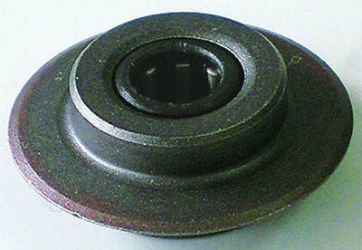

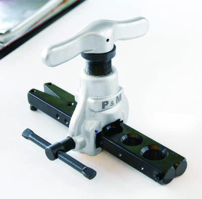
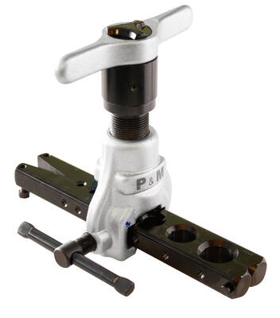
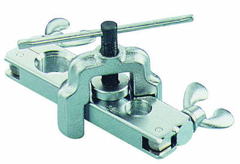
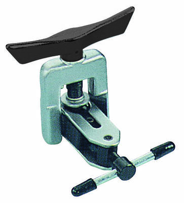
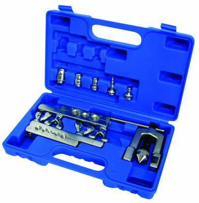
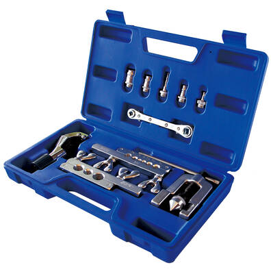
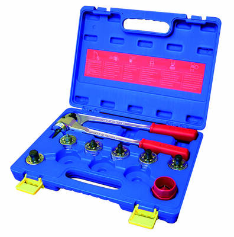
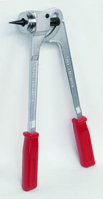
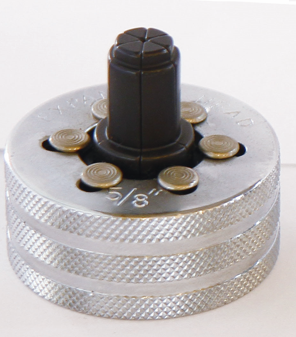


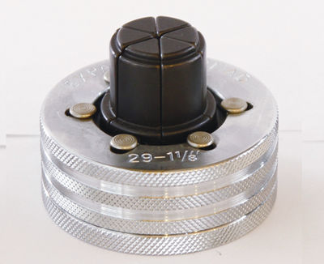

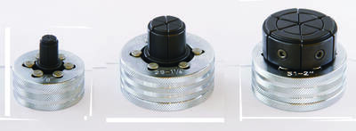
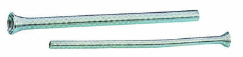


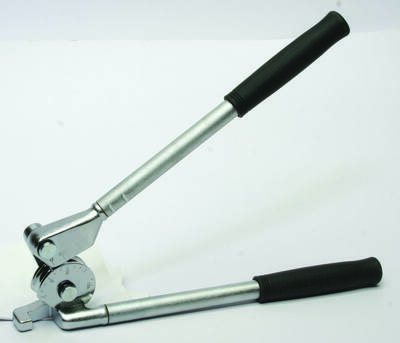


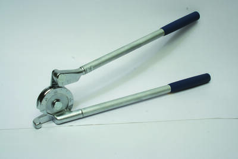
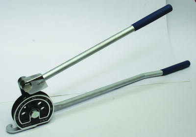
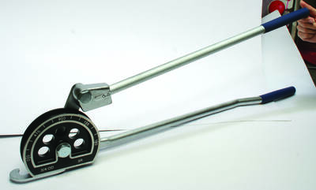

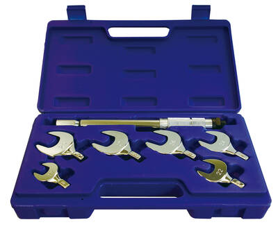
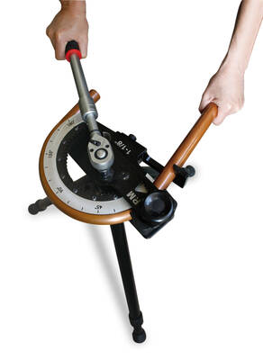
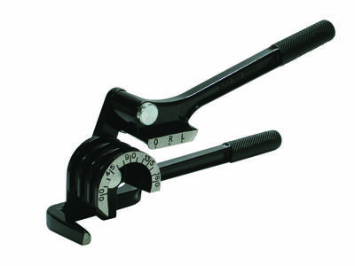

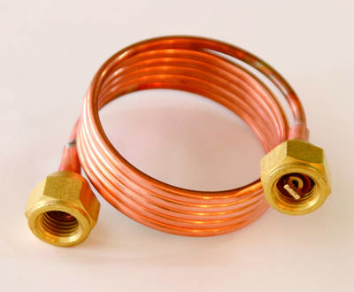

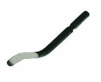
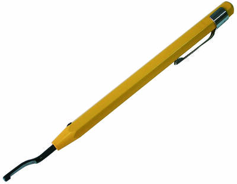
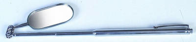
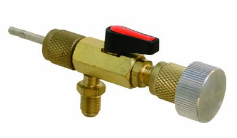
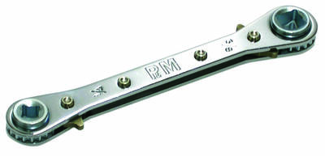
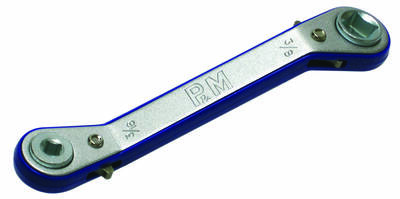
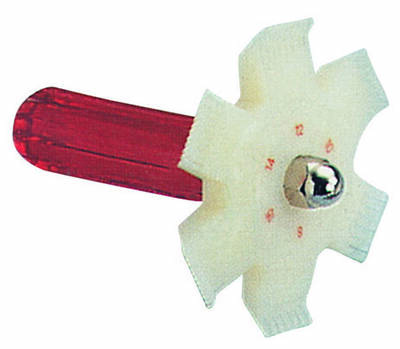
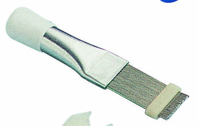
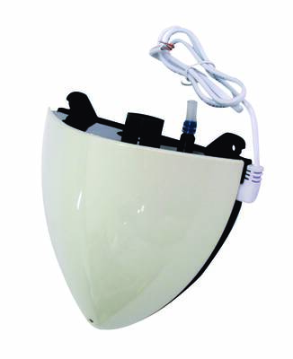
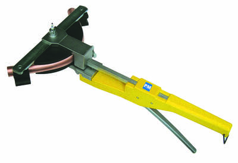
Tüm 95 ürünü filtreli listede gör →
Evet. Klimasun P&M ürünlerini ve yedek parçalarını orijinal olarak tedarik eder; kataloğumuzda 95 P&M ürünü listelidir.
Evet, tüm ürünler orijinaldir. Stokta olmayanlar Almanya ve İtalya'dan sipariş üzerine temin edilir.
Ürünü teklif sepetine ekleyip WhatsApp (0532 424 6219) veya e-posta ile iletin; hızlıca kurumsal teklif alırsınız.